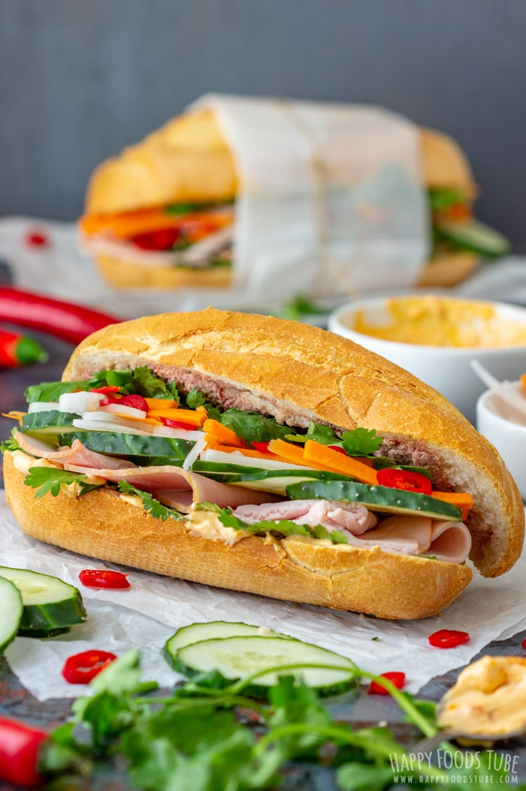
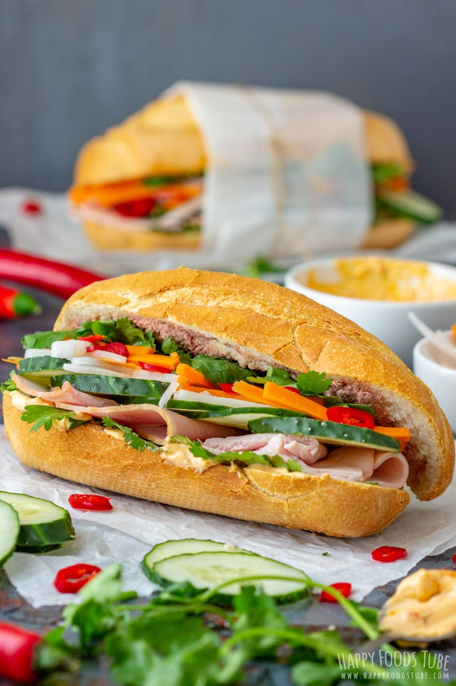
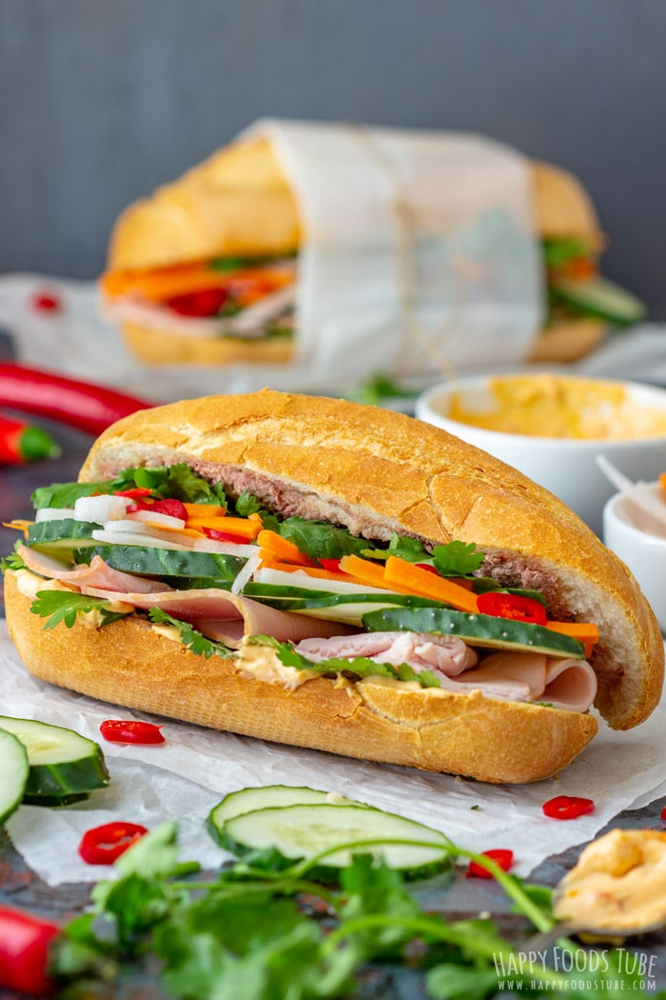

Vietnamese food
 



I am an international student from Vietnam.
This webpage is an assignment called the worst website
I have completed my assignment and what have I done for this assignment?
Click here to find out
